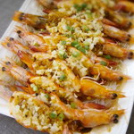
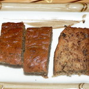
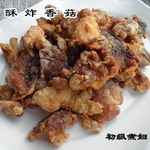
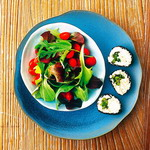
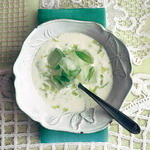
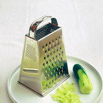
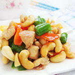

博文精粹

发表于 2012.12.6 作者 wuyuze
仲秋好象刚过去没多久，十一就快来了，天气渐渐地转凉，时不时有清凉的微风吹过，晚上睡觉也要盖上一点薄被了。广州的秋天看不到秋风扫落叶的景象，到处还是一片葱茏的绿色，空气间多了一丝凉意，我喜欢广州秋天的感觉，不象在北方此时树叶落尽，一地枯黄，多了些萧瑟和凄凉。

香蕉面包的方子多的是，我改来改去，终于改到了一个很满意的方子，成品软润香甜，已经用了有很长一段时间了。
阅读全文

香菇，又名香蕈、冬菇，是一种生长在木材上的真菌类，在我国已有4000多年的食用历史。香菇味道鲜美，香气沁人，营养丰富，素有"植物皇后"美誉。
阅读全文

芝麻菜可算是叶菜里的稀罕物。刚吃的时候有一种芝麻香气，接着是一种辣气，如果炒熟了，辣气就又变成了一种苦味。
阅读全文

闷热夏季，自然想吃些爽口的东西，杏是个不错的选择。如果怕生吃太酸，不妨煮熟了做甜品，还能生津止渴。
阅读全文

接近40度的高温天，简直恨不得把自己给冰镇了！其实冷饮多吃伤脾胃，还有许多添加的奶脂和香精，不健康、易发胖。
阅读全文

腰果中的某些维生素和微量元素成分有很好的软化血管的作用，对保护血管、防治心血管疾病大有益处。
阅读全文